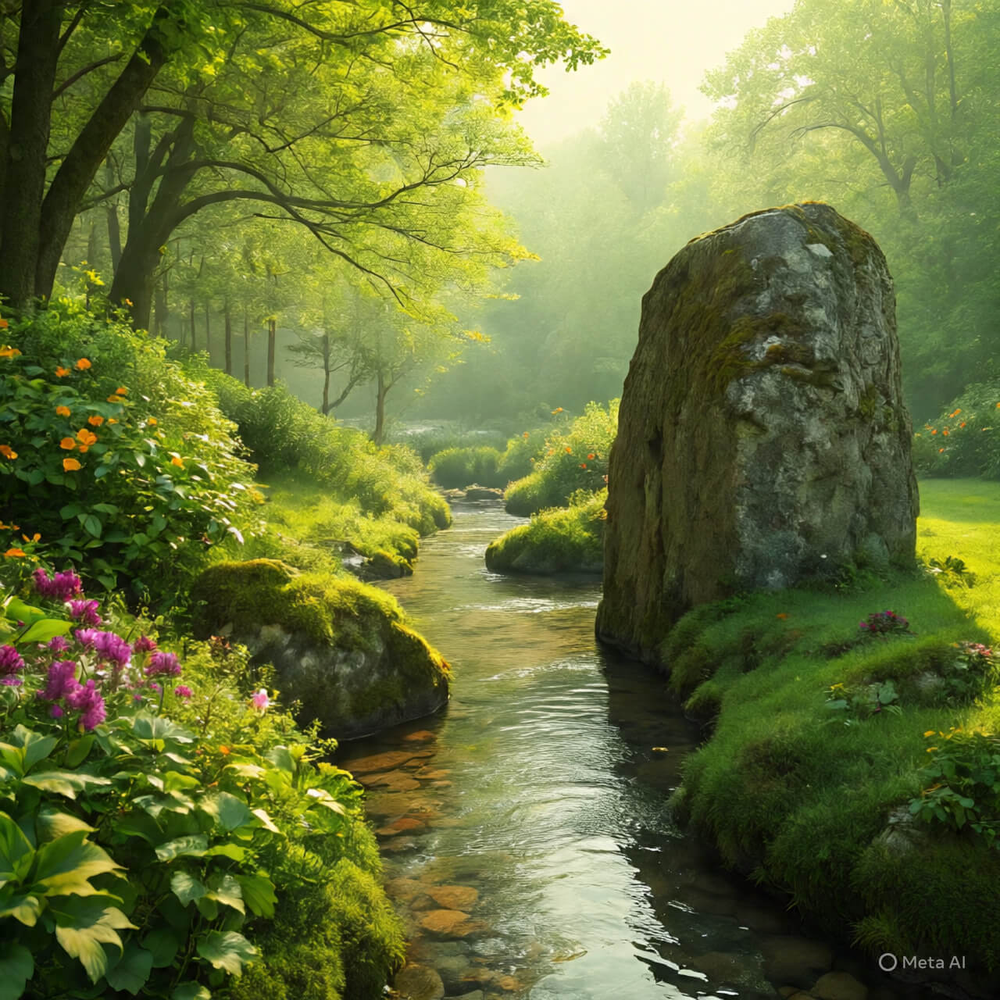

🪨 La Pierre et le Ruisseau

Une pierre reposait depuis toujours au fond d’un ruisseau. Chaque jour, l’eau passait sur elle, douce et fraîche. Mais la pierre restait immobile. Un matin, le ruisseau lui dit : — Tu sais, je t’admire. Tu es forte et stable. La pierre répondit : — Et toi, tu es libre, vive et légère. J’aimerais savoir couler comme toi. Le ruisseau sourit. — Alors laisse-moi t’emporter un peu… pas entièrement, juste une part de toi. Et jour après jour, sans bruit, il sculpta la pierre. Il lui donna une courbe, une douceur. Il ne la déplaça pas, mais il la changea. Aujourd’hui encore, les promeneurs s’arrêtent là. Ils touchent la pierre lisse et murmurent : — Comme c’est beau. Sans savoir que c’est le passage du ruisseau, invisible et patient, qui a sculpté ce silence. Fin.